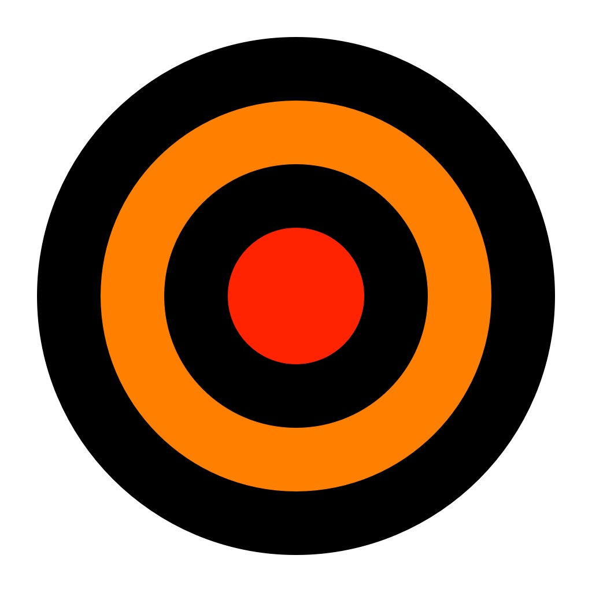

Dart Scoreboard
The fast, simple dart scoreboard for iPhone, iPad, Apple Watch and Apple TV. Cricket, 301 and 501, Shanghai and Tactics. Play together on everyone's own phone, or put the board on the big screen.


Made for the throw line
Big buttons, readable from a step back, built to score a real game at real speed.
Why players like it
No ads, no accounts, no clutter. A scoreboard that keeps up with the game, and now one that everyone in the room can share.
Fast scoring
Tap a number for a single, hold for a double or triple, fix any dart with a tap. No menus between throws.
Play together
One game on everyone's own iPhone or iPad, in the same room or over several days. Friends find your game nearby, scan a code, or open an invitation.
On the big screen
Host a game on Apple TV and everyone joins with a four-digit code, or AirPlay the board from your phone. Readable from across the room.
On your wrist
Score from your Apple Watch during any game on your phone, start games with your players, and join a game on a TV with its code.
Everything a scoreboard should do
1 to 5 players
Player profiles with photos, turn order, and per-player marks. Practice alone or score the whole crew.
Every cricket variant
Standard, points, cut-throat, Wild Card Cricket with random numbers, and Tactics with doubles, triples and three in a bed. Marks drawn the way they are on a chalkboard.
301, 501 and more
Double in, double out, and scoring by turn total for people who add up in their heads.
Computer opponent
Four skill levels from beginner to pro, for practice when nobody's around.
Remote play
One game on everyone's own device, through iCloud. Join from the nearby list, a QR code or an invitation.
Apple TV and big screen
Host a game on Apple TV with a four-digit code, or AirPlay the board from your phone.
Stats and history
Averages, marks per round, checkouts and 180s across games, and every turn of every game, kept in your own iCloud.
Free, with Pro
The scoreboard is free. Pro adds remote play, the big screen, the computer opponent, stats and the Live Activity for $0.99 a month or $9.99 a year. No ads, no accounts.
Dart Scoreboard on Apple TV
The Apple TV app turns the TV by the board into the scoreboard. It hosts the game, and everyone scores from their own iPhone, iPad or Apple Watch.
Host with a code
Pick the game and its rules on the TV and open the room. It shows a four-digit code and a QR code, and friends are in within seconds.
A board for the whole room
Scores, marks and whose throw it is, with recent turns and stats beside the board, all sized to read from the throw line.
It calls the game
Sound effects and an announcer that calls each turn and the scores, in the voice you choose.
Your rules
Cricket, Tactics, Wild Card, 301 up to 1001 and Shanghai, with your own target numbers. Let anyone score, or only each player's own phone.
The board on the big screen
The scoreboard, the waiting room with its code, and the Home screen, on Apple TV.
Dart Scoreboard on Apple Watch
Leave the phone in your pocket. The watch scores the game from the throw line.
Score from your wrist
Tap a number for a single, hold for a double or triple, and tap a dart to fix it. Undo, redo and next player are one swipe away.
The whole board
Swipe over for the scoreboard: marks, scores and every turn, just as on the phone. A tap on the wrist tells you when someone has won.
Start and pick back up
Start Cricket, Tactics, Wild Card, Shanghai, 301 or 501 with the players from your list, or pick an unfinished game back up.
Join the big screen
Type the four-digit code off the Apple TV and score your darts from your wrist.
The game on your wrist
The scoring keys, the scoreboard and the turn-total keypad, on Apple Watch.
What's new
Dart Scoreboard 5 is a complete rewrite of the app that has been keeping score since 2014.
v5.0
Sep 30, 2026
Rebuilt from the ground up, with new ways to play together. Now free, with an optional Pro subscription.
About the developer
Jon Hill
Developer
My name is Jon and I like to play darts. I built Dart Scoreboard Pro because I was frustrated with the buggy, overly complex dart apps in the App Store — I wanted something anyone could open and start playing immediately. More than a decade later, that’s still the whole idea.
Frequently asked questions
Cricket (standard, points and cut-throat), Wild Card Cricket with random numbers, Tactics with doubles, triples and three in a bed, 301 and 501 with optional double in and double out, and Shanghai. Cricket and Shanghai also let you pick your own numbers.
One person starts a game and friends join from their own iPhone or iPad: from the nearby list on the same Wi‑Fi, by scanning a QR code, or with an invitation. Everyone scores their own players, and the game keeps itself in sync through iCloud, in the same room or over several days.
It hosts a game on the big screen. The TV shows a four-digit code; everyone joins from a phone or watch and scores from their own device, and the TV shows the board, recent turns and stats. You can also AirPlay the board from your phone.
Score from your wrist during any game on your phone, start a game with your players, pick an unfinished game back up, or join a game on a TV with its code.
Tap the dart to change or remove it, or use Undo. Redo puts it back.
Dart Scoreboard is free. Dart Scoreboard Pro adds remote play, the Apple TV and big-screen board, the computer opponent, stats across games and the Live Activity, for $0.99 a month or $9.99 a year. If you bought the app when it was paid, Pro is included through the end of 2027, and the big-screen board stays yours for good.
Use Send Feedback in the app's Settings, or email dartscoreboardpro@gmail.com. Jon reads everything.
Ready to throw?
Get Dart Scoreboard on the App Store, free, and be scoring in seconds. Pro adds remote play, the Apple TV board, the computer opponent and stats.